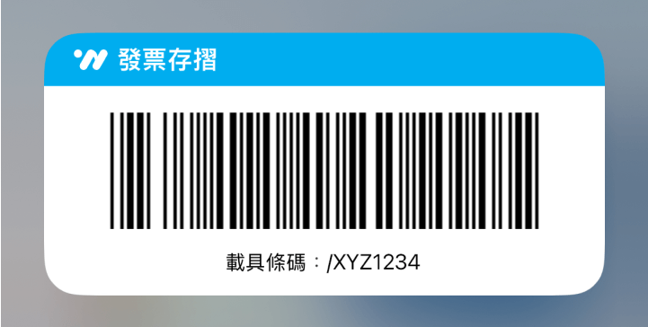

將發票存入 App 的好處

定期對獎
一秒完成對獎免手動

幫助記帳
幫你記錄發票明細

消費分析
圖像化每月消費重點

獲得額外獎勵
LINE點數、超商購物金
我要如何存入發票？
在結帳時，向店家出示您的載具條碼，完成掃描後即可將發票存入財政部雲端，後續待 App 同步完成便可查閱發票明細。
將發票存入雲端可以加碼對雲端專屬獎，額外獲得一百萬、兩千、八百與五百元的機會！
我的發票何時會存入？
- 發票存入載具後，同步到 App 約需要兩天，請耐心等候！
- 如果發票沒有完整存入，請下拉列表重新同步，完成後將會通知您。
- 建議您常回來 App 同步發票，發票對獎日才能準確地核對所有發票。
- 開啟 App 的通知權限，才能即時收到發票存入的通知！
我可以存入紙本發票嗎？
- 前往「發票存摺」分頁，點擊右下角的「＋」按鈕。
- 選擇「掃描輸入」或「手動輸入」。
- 使用掃描輸入時，請將鏡頭對準電子發票的 QR code。成功時畫面下方會顯示發票期數與號碼，資料將會自動存入並與財政部同步。
- 使用手動輸入時，請填入電子發票上的「隨機碼」，系統即可與財政部同步此發票明細。傳統發票則沒有隨機碼，需要手動填入明細。